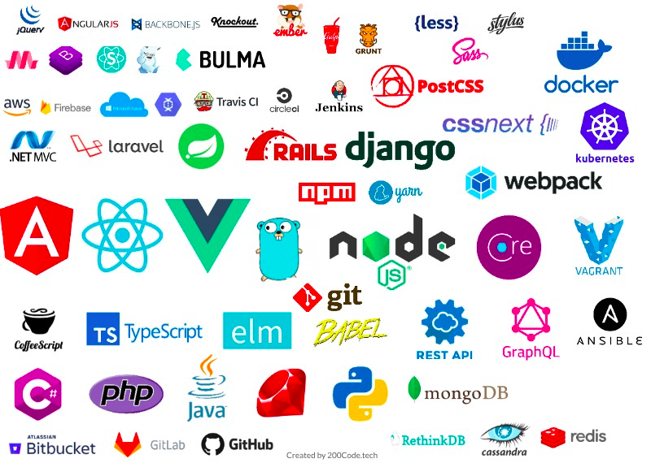

Tipos de Framework
Existen varios tipos de frameworks Web: orientados a la interfaz de usuario, como Java Server Faces, orientados a aplicaciones de publicación de documentos, como Coocon, orientados a la parte de control de eventos, como Struts y algunos que incluyen varios elementos como Tapestry.
La mayoría de frameworks Web se encargan de ofrecer una capa de controladores de acuerdo con el patrón MVC o con el modelo 2 de Servlets y JSP, ofreciendo mecanismos para facilitar la integración con otras herramientas para la implementación de las capas de negocio y presentación.
